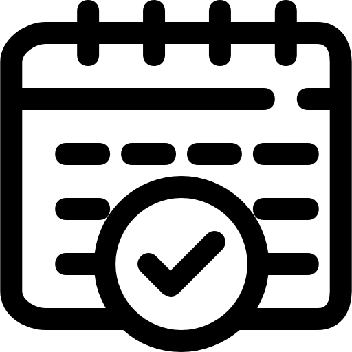

Checklist del día
Marca cada tarea a medida que la vayas completando.
Aún no has completado tareas hoy.
Lleva un mejor control de tareas importantes como comida, medicamentos, agua y paseos durante el día.

Marca cada tarea a medida que la vayas completando.
Aún no has completado tareas hoy.
Pequeñas acciones que ayudan a no olvidar lo importante.
Un seguimiento constante ayuda a prevenir olvidos importantes.